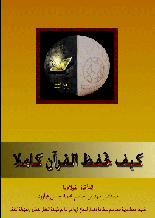

<main ng-controller="DownloadController">
    <div class="row row-content">
        <br /><br /><br /><br />
        <form class="form-horizontal" role="form" name="downloadForm" ng-submit="nothankyou()">
            <div class="media col-xs-12">
                <div class="media-left mediasize">
                    
                </div>
                <div class="media-body">
                    <h2 class="media-heading">الكتاب التدريبي في الذاكرة الفولاذية <br /></h2>
                    <p>
                        <span class="label label-danger" style="margin-left:12px;">Free</span>
                    </p>
                    <p>
                        <a class="btn btn-primary btn-xs" target="_self" href="/views/download/كيف تحفظ القرأن الكريم كاملا.pdf" download="memoryBook">download &raquo;</a>
                    </p>
                    <p><button type="submit" class="btn btn-default btn-xs btn-block btn-send">Thank You</button></p>
                    <p style="font-size:17px;">
                        ماذا سيضيف لك هذا الكتاب؟
                        تطبيق ما جاء به كتاب "كيف تحفظ القرآن كاملا"، من أنظمة حفظ، سيضفي أبعادا جديده لقلوب حفظة القرآن. المبتدأ، و المتقدم في تذكر الذكر الحكيم، سيكتسب قدرات جديدة تثبت الحفظ و تسهله. المهارات العقلية التي ستحصل عليها في الطريق لتحقيق هذا الهدف السامي، و بتطبيق أنظمة وتقنيات تذكر عربية مميزة نضعها بين يديك لأول مرة:
                        - حفظ القرآن بالكامل مع القدرة على سرد كل سورة و كل آية بالرقم.
                        - العقل الكامل هو باب التذكر الممتاز، و الإبداع، و العبقرية، و قدرات مميزة في عموم التحصيل العلمي.
                        - التعرف على كيفية عمل الدماغ و العقل و تطبيقها لإضفاء معاني جديدة للحياة و النجاح.
                        - كيف تركز في حياتك و تعيش الحاضر بكل وجدانك و تمنع التشتت الذهني.
                        - التطوير الفعال للذاكرة بأشكالها و أنواعها السمعية و البصرية، القصيرة المدى و الدائمة مع التطبيق لزيادة فعالية الحواس المستقبلة للمعلومات و أدوات الإتصال عند القارئ.
                        - كيفية ترميز و تشفير المعلومات، لتجد طريقها إلى الذاكرة بسهولة و تحفظ بيسر، ليصبح نسيانها صعبا.
                        - تطبيق معمار النجاح و مبادئ علوم الذكاء الصناعي، و كيف يمكنك توليد  طاقات خلاقة هائلة لتحقيق جميع أهدافك في الحياة.
                        - تطوير الشبكة المعرفية العقلية.
                        - لماذا ننسى؟ و كيف نمنع نسيان المعلومة التي نرغب بحفظها.
                        - تطبيق أنظمة و تقنيات الحفظ للإمتياز في التحصيل العلمي.
                        - كيف تصبح إنسانا إيجابيا و تبعد عقلك عن التفكير السلبي.
                    </p>
                </div>
            </div>
        </form>
    </div>
</main>